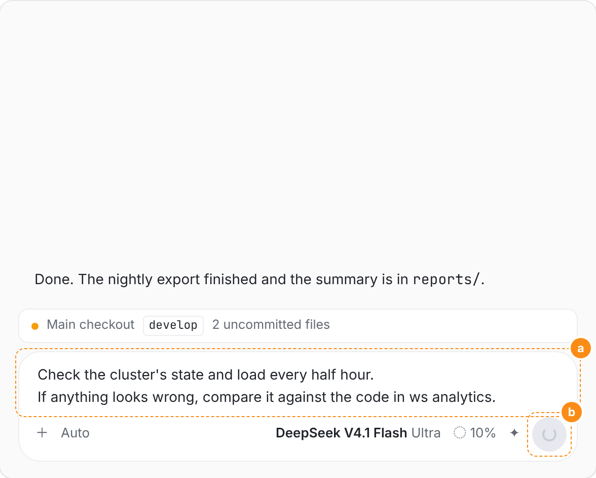
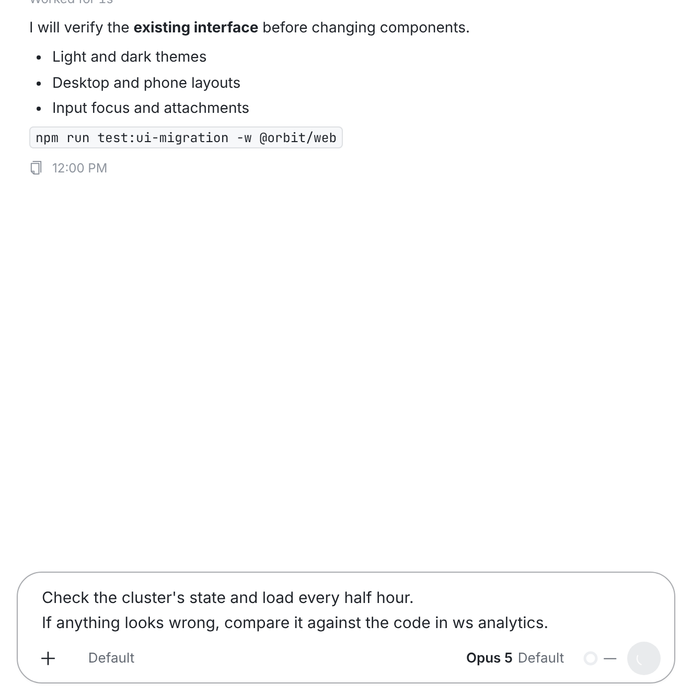
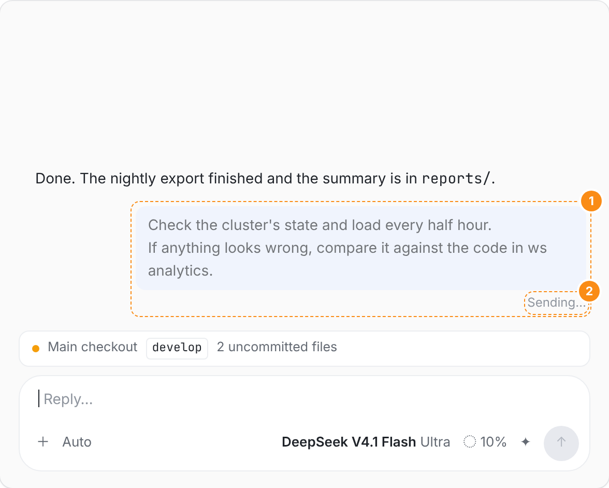
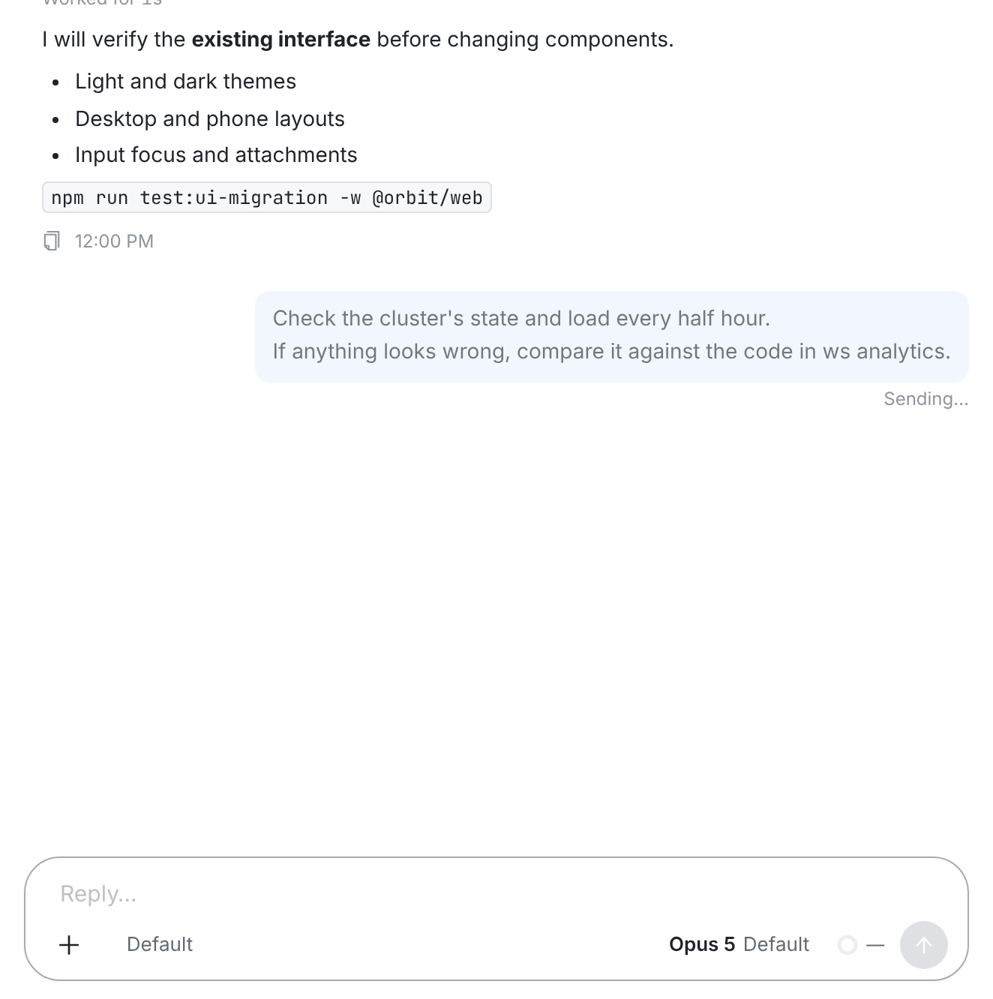
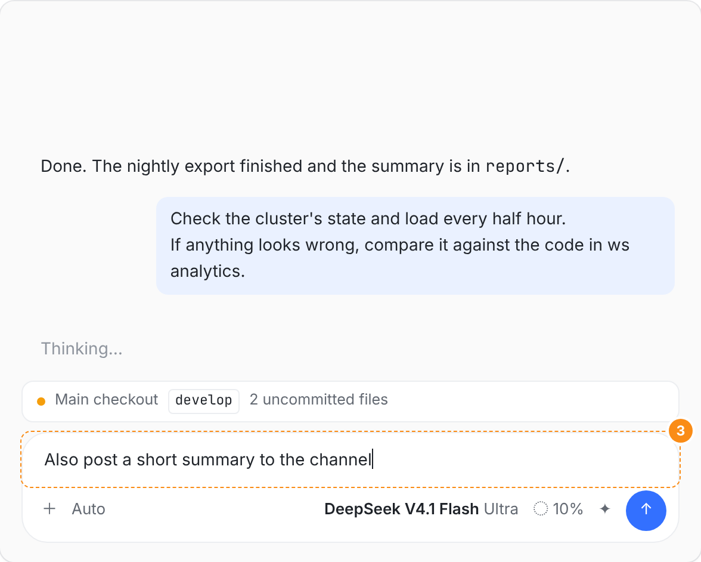
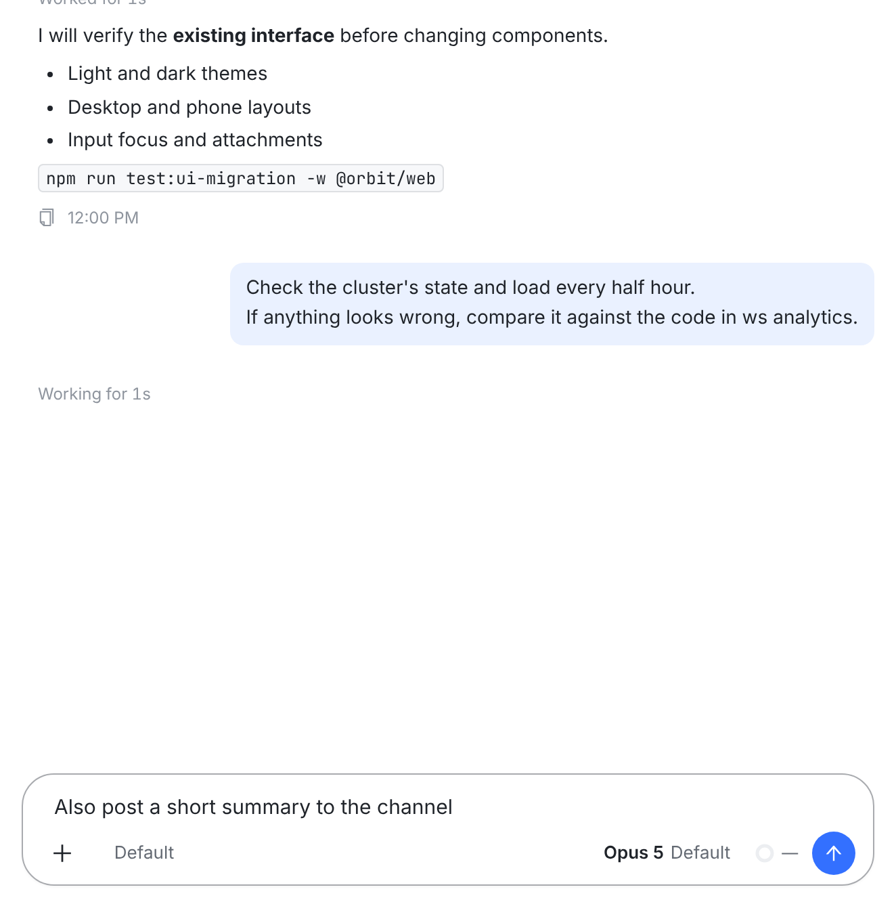
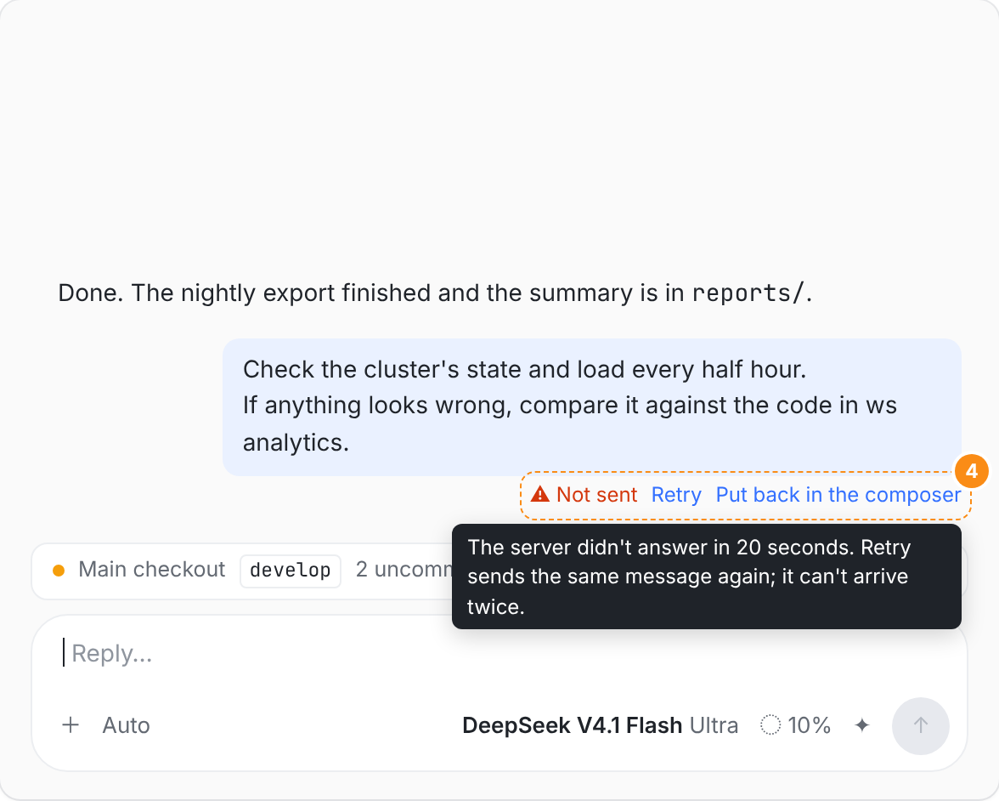
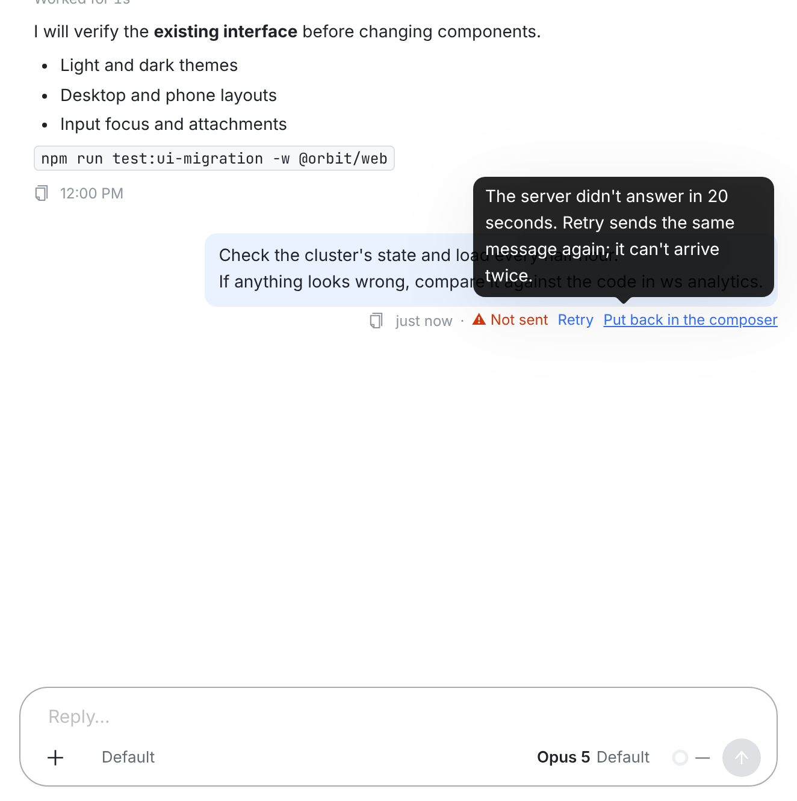
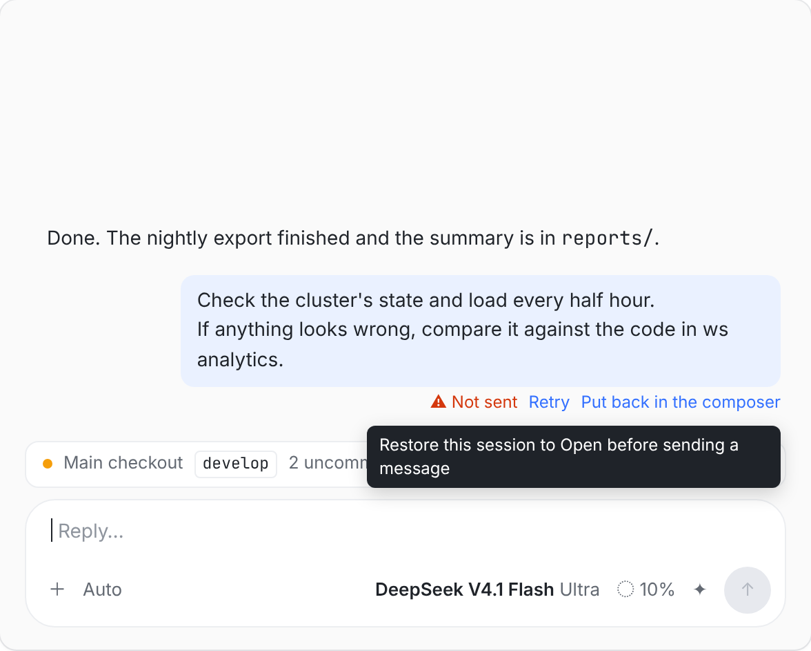
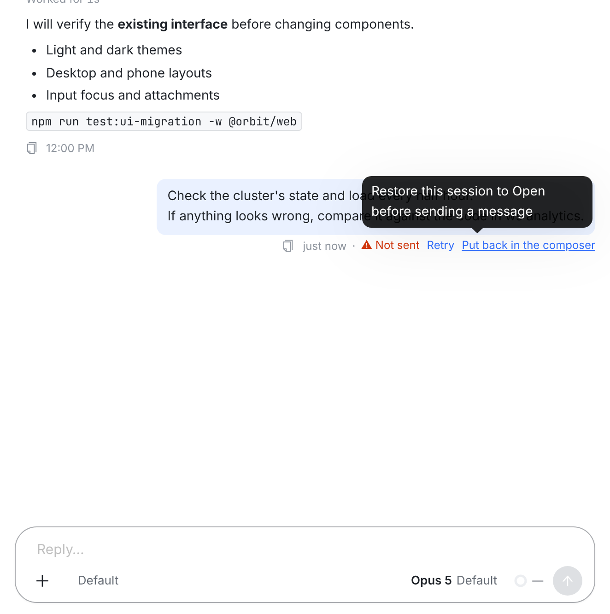

Left: the frame as drawn on the board. Right: the built page in Chromium, sending the same words. The fixture session runs Claude (Opus 5) with no workspace bar, so the model control and the strip above the box differ from the board. That comes from the fixture data, not the change.
Board

Built page

The same picture as the reported screenshot: the words still in the box and a grey spinner on Send.
Board

Built page

As drawn: dimmed bubble, Sending… in its foot, an empty box, and Send a plain disabled arrow.
Found and fixed by this shot: the first build also drew Working for 1s under the bubble and kept a
spinner on Send. A message the server has not taken has opened no turn, so neither belongs there.
Board

Built page

Full strength, nothing in its foot, and the typed sentence still in the box. The turn's own clock
(Working for 1s) starts here, where the board drew "Thinking…". That's the page's existing turn head.
Board

Built page

As drawn, after a real 20-second wait: ⚠ Not sent · Retry · Put back in the composer, with the
reason in the tooltip. The real tooltip opens above the line, where the board drew it below.
Board

Built page

The same line, with the server's sentence in the tooltip and no toast.